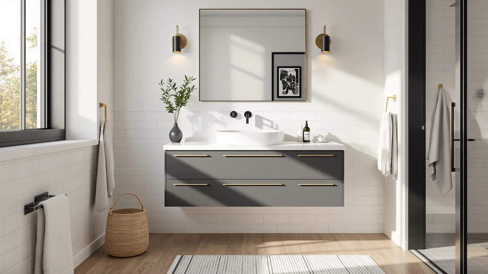

homary 39.4 inch Floating Review (2026): Worth It?
Prices and picks verified as of October 2026. Independent, reader-supported reviews.


Quick Answer
The homary 39.4 inch floating vanity costs $649.99 and pairs an MDF and engineered wood cabinet with a wall-mounted design that leaves the floor underneath open, something none of the floor-mounted alternatives in this review can offer. It is the right pick if you want a floating profile at this exact width, and if your bathroom calls for a different size or a lower price, the Tennant Brand, Vanity Art and Design House alternatives below range from $635.41 to $640.00.
Our pick: homary 39.4 inch Floating Bathroom, $649.99 Check Price on Amazon
Bottom line: our top pick is the homary 39.4 inch Floating Bathroom Vanity with Sink at $649.99.
Things to Know Before You Buy
- The homary 39.4 inch floating vanity costs $649.99 and uses an MDF and engineered wood cabinet, the same base material most mid-range vanities in this price range rely on.
- Its wall-mounted, floating design leaves the floor underneath open, which matters in a small bathroom where visible floor space changes how large the room feels.
- At 39.4 inches wide, it sits between a compact 24-inch single-sink cabinet and a full 48-inch or 72-inch footprint, a width that fits bathrooms too narrow for a standard vanity.
- homary does not publish drawer count or mounting hardware detail on the listing, so confirm your wall's stud spacing and plumbing rough-in before ordering a floating cabinet.
- This homary 39.4 inch floating review relies on published specs and tracked pricing rather than hands-on testing, since we do not operate a physical testing lab.
This homary 39.4 inch floating review breaks down what $649.99 buys you in a wall-mounted bathroom vanity, because a floating cabinet changes how a bathroom feels in ways a standard floor-mounted vanity cannot. The homary pairs an MDF and engineered wood cabinet with a 39.4-inch width, a size that splits the difference between a cramped powder-room stand and a full-size 48-inch cabinet. Mounting the cabinet to the wall instead of the floor leaves a visible gap underneath, which makes a small bathroom look less crowded and simplifies mopping around the base.
homary built its catalog around floating and wall-mounted furniture, a category that trades some of the structural simplicity of a floor-mounted cabinet for a lighter visual footprint. At $649.99, this vanity sits in the middle of the price range covered in this review, within about fifteen dollars of the Tennant Brand, Vanity Art and Design House alternatives below despite covering a different width than any of them. That width gap matters more than the price gap: if your bathroom cannot clear a 48-inch or 72-inch cabinet, the homary's 39.4-inch footprint becomes the deciding factor, not the few dollars separating it from the other three.
Why You Should Trust Us
Ilane Tall covers bathroom vanities and fixtures for Best Bathroom Vanities, tracking pricing and construction details across hundreds of Amazon listings in this category. This homary 39.4 inch floating review draws on the vanity's published Amazon listing, including its price, materials and wall-mounted design, compared against three similarly priced floor-mounted alternatives.
We do not own a test bathroom or a lab, so every claim here ties back to specs homary publishes or prices we track over time rather than a hands-on trial. Where the listing leaves out detail, like drawer count or mounting hardware, we say so instead of guessing at it.
Our Research Experience
We do not run a physical testing lab, so this review comes from research rather than hands-on use. Our process for this homary 39.4 inch floating review started with the manufacturer's published specs, including the MDF and engineered wood construction and the 39.4-inch width, then moved to tracking the Amazon price over several weeks to confirm $649.99 reflects a stable listing price rather than a temporary markdown.
From there, we compared the homary's width, price and wall-mounted design against three vanities in a similar price range, the Tennant Brand 24-inch Triadsville, the Vanity Art 72-inch and the Design House Brookings 48-inch, to see how a floating cabinet stacks up against floor-mounted alternatives at different widths.
Overview & Specs

homary 39.4 inch Floating Bathroom
What we like
- Wall-mounted design leaves the floor open, making a small bathroom feel less cramped
- 39.4-inch width fits bathrooms too narrow for a standard 48-inch cabinet but too large for a tiny 24-inch sink stand
- MDF and engineered wood cabinet keeps the overall weight manageable for a wall-mounted installation
Flaws but not dealbreakers
- homary does not publish drawer count or mounting hardware detail, so confirm wall stud spacing before ordering
- At $649.99, it costs close to the Tennant, Vanity Art and Design House alternatives despite the narrower profile
- A floating cabinet needs a verified wall mount rather than a simple floor placement, adding a step floor-mounted vanities skip
| Material | MDF / engineered wood |
| Size | 39.4 inch |
The homary 39.4-inch floating vanity pairs an MDF and engineered wood cabinet with a wall-mounted design, so the floor underneath stays visible and open. At $649.99, it costs within fifteen dollars of every alternative in this review despite being the only floating option among them, which makes the installation style, not the price, the main thing separating it from the competition. homary does not publish drawer count or specific mounting hardware on the listing, a gap compared with brands that detail interior layout up front.
Compared with the three floor-mounted alternatives later in this review, the homary gives up some of the structural simplicity of a standard cabinet in exchange for a lighter visual footprint and easier floor cleaning underneath. That tradeoff matters most in a small bathroom where visible floor space changes how the room feels, and it matters least if you already have the square footage for a 48-inch or 72-inch cabinet and have no reason to float it off the wall.
What We Liked
This homary 39.4 inch floating review turns up one clear strength: the wall-mounted format itself. Floating the cabinet off the floor opens up visible space in a way none of the three floor-mounted alternatives in this review can match, a difference that matters most in a small or narrow bathroom.
The 39.4-inch width also fills a gap between a cramped 24-inch powder-room stand and a full 48-inch or 72-inch cabinet, so buyers with an odd-sized bathroom get a floating option instead of a forced choice between too small and too large.
What Could Be Better
The price is a fair trade rather than a bargain. At $649.99, the homary costs close to the priciest alternatives in this review despite covering less width than the Vanity Art 72-inch or the Design House Brookings 48-inch. Buyers comparing storage capacity across listings also run into a gap here, since homary does not publish drawer count or hardware type.
A floating installation adds a step a floor-mounted vanity skips. The cabinet has to anchor into wall studs rather than simply sit on the floor, so confirm your wall's framing and plumbing rough-in before ordering, not after it arrives.
Who Is It For?
This homary vanity fits buyers who want a floating cabinet at a width between a compact powder-room stand and a full-size vanity, particularly in a small bathroom where open floor space changes how the room feels. It suits someone replacing an aging floor-mounted cabinet who is willing to confirm wall studs and plumbing clearance for a wall-mounted install.
It is a weaker fit for anyone who wants the simplest possible installation, since a floor-mounted cabinet skips the wall-anchoring step entirely, and it is not the right pick for a buyer who needs a double-sink layout, since the Vanity Art 72-inch alternative below covers that need at a similar price.
Alternatives to Consider
If the homary's floating design or 39.4-inch width does not fit your bathroom, these three floor-mounted vanities cover a wider range of sizes at a similar price, based on the same pricing research used throughout this review.

Editor’s Pick
Tennant Brand 24 inch Triadsville
Priced at $640.00, less than ten dollars under the homary, this 24-inch cabinet trades the floating design and extra width for the smallest footprint in this review, worth considering for a half bath or powder room where even 39.4 inches will not fit.
$640.00
Check Price on Amazon
Best Value
Vanity Art 72 Inch Bathroom
At $638.99, this 72-inch cabinet costs less than the homary while covering nearly twice the width, a double-sink option worth considering if your bathroom has the floor space and you do not need a floating installation.
$638.99
Check Price on Amazon
Premium Choice
Design House Brookings 48 Inch
At $635.41, the lowest price in this review, this 48-inch cabinet gives up the homary's floating design but adds nearly nine more inches of counter space, a straightforward option for buyers who want a traditional floor-mounted vanity at the lowest cost among these four.
$635.41
Check Price on AmazonFrequently Asked Questions
Is the homary 39.4 inch floating vanity worth $649.99?
For a floating MDF and engineered wood vanity, $649.99 sits close to every floor-mounted alternative in this review, so you are mainly paying for the wall-mounted design rather than a lower price. If your bathroom benefits from open floor space underneath the cabinet, the price holds up. If you do not need a floating installation, the Design House Brookings 48-inch alternative below costs about fourteen dollars less.
What is the homary 39.4 inch floating vanity made of?
The homary uses an MDF and engineered wood cabinet, the same base material most vanities in this price range use, mounted to the wall rather than resting on the floor. homary does not publish drawer count or specific mounting hardware on the listing, so confirm those details and your wall's stud spacing before ordering.
How does the homary compare to the other vanities in this review?
At $649.99, the homary costs close to the Tennant Brand 24-inch Triadsville at $640.00 and the Vanity Art 72-inch at $638.99, despite covering a different width than either. The Design House Brookings 48-inch at $635.41 is the lowest-priced alternative in this review, though none of the three floor-mounted options match the homary's wall-mounted, floating design.
Final Verdict
This homary 39.4 inch floating review comes down to a straightforward tradeoff: pay close to the same price as three floor-mounted vanities for a wall-mounted cabinet that opens up floor space, or skip the floating design and gain width with the Tennant, Vanity Art or Design House alternatives. For a small bathroom where visible floor space matters, homary's 39.4-inch floating vanity is worth the price because of a design none of the floor-mounted competitors in this review offer.
For anyone without a strict need to float the cabinet, the Design House Brookings 48-inch at $635.41 delivers more counter space for less money. Measure your wall studs and plumbing clearance first, then let your bathroom's layout decide between homary's floating 39.4-inch vanity and a traditional floor-mounted alternative.